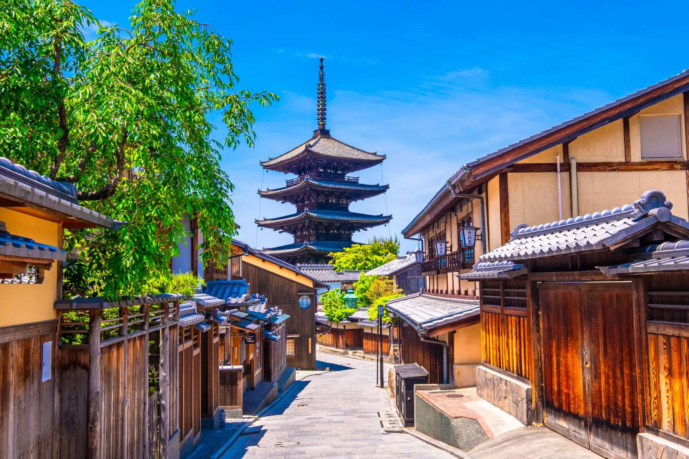
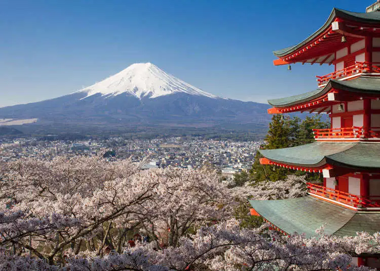

日本以其獨特且深遠的動畫文化聞名於世，是全球動漫迷的聖地。動畫不僅是一種娛樂形式， 更是融合了豐富傳統文化與現代元素的藝術表達，對日本社會,文化和音樂產生了巨大影響。
在日本，許多經典動畫如《龍珠》、《火影忍者》、《鬼滅之刃》和宮崎駿的作品如《千與千尋》、《天空之城》等，都在世界範圍內享有極高聲譽。 這些動畫作品不僅塑造了深刻的故事和人物，也將日本的自然景觀、建築風格和風俗習慣巧妙地融入其中，吸引粉絲親自探索這些動畫靈感來源地。

《龍珠》- CHA-LA HEAD CHA-LA

《鬼滅之刃》- 紅蓮華
京都是遊客喜愛的地方，保存了大量傳統寺廟和古建築，曾多次出現在動畫作品裡，如《你的名字》中的場景靈感即部分源於京都。 東京作為現代大都市，是許多動畫故事的背景舞台，秋葉原則是動漫文化的核心地帶，擁有眾多動漫商店、主題咖啡廳和活動場所，是動漫迷必訪之處。


富士山和箱根等自然景觀經常出現在動畫中，不僅景色壯麗，也是體驗日本自然美的好去處。 日本動畫強調情感與細節的刻畫，讓人透過影像深入感受文化傳統與時代變遷的交融。
以動畫為中心探索日本，不僅是追尋影視之美，更是開啟一段文化交流與心靈共鳴的旅程，讓訪客沉浸在這個充滿幻想與真實交織的國度。